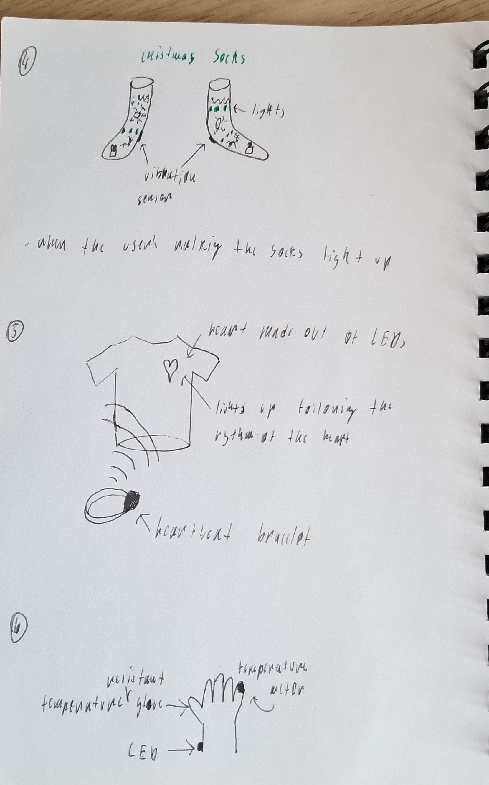
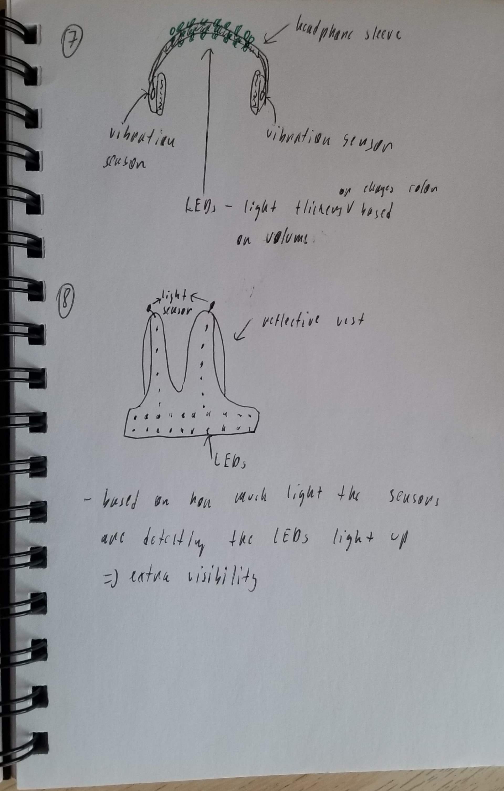
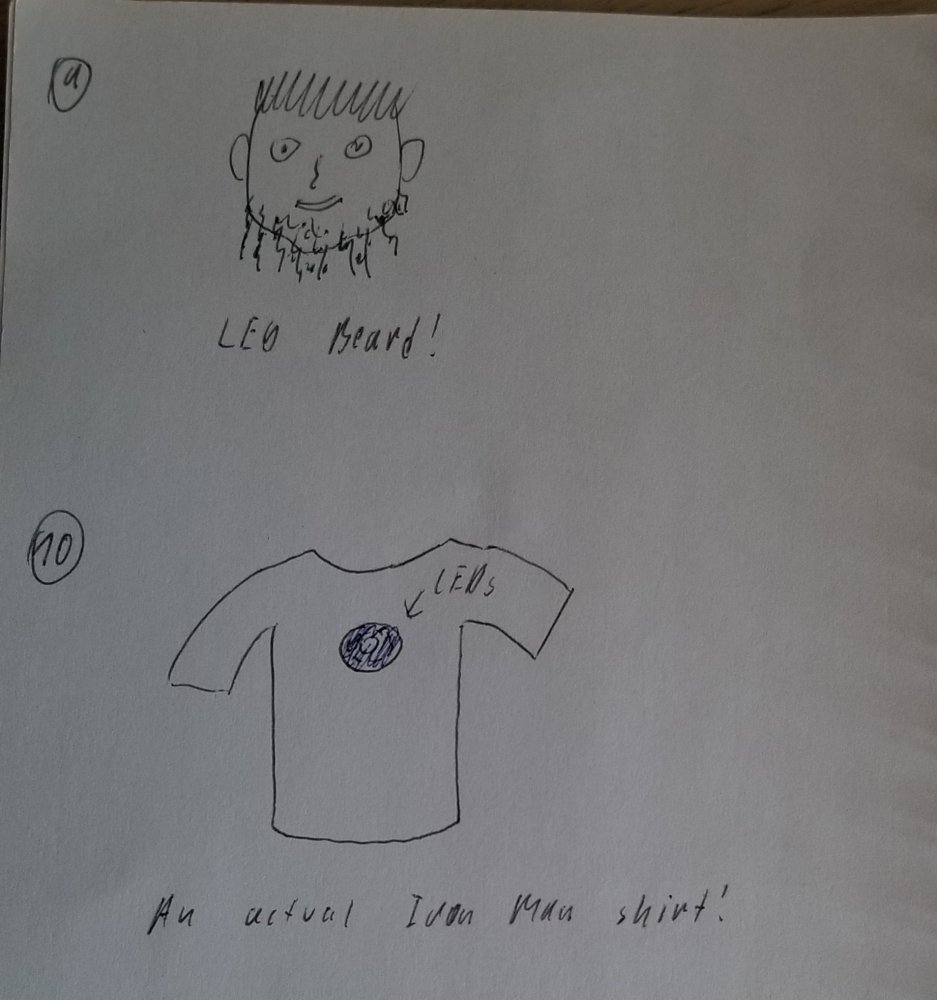
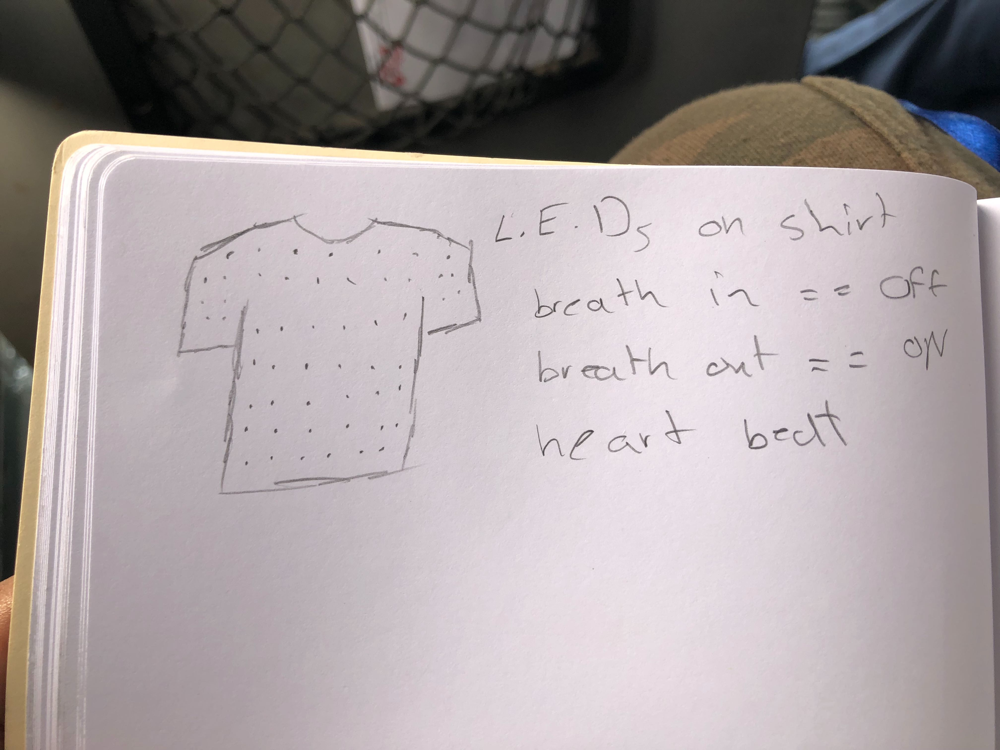
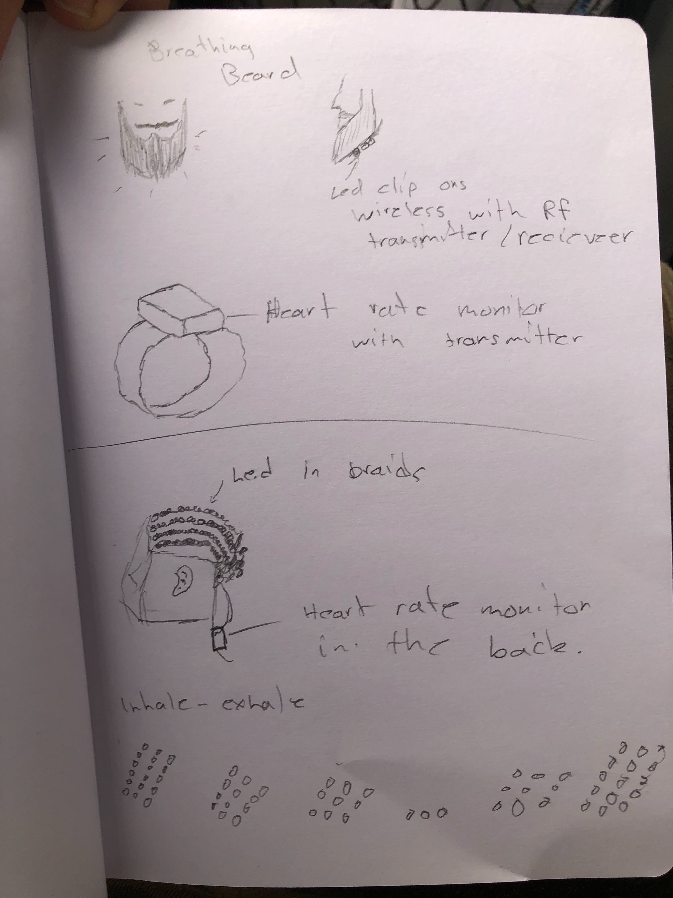
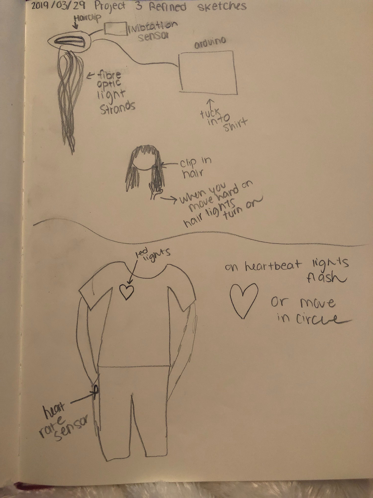
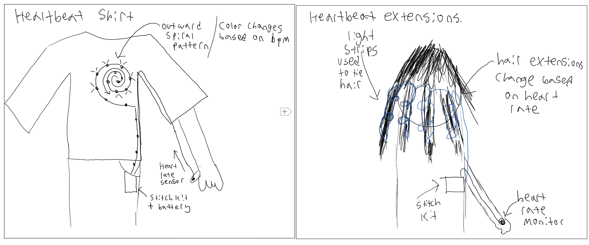
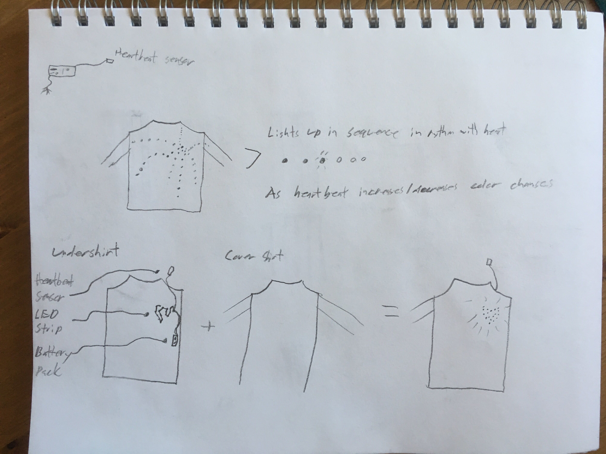
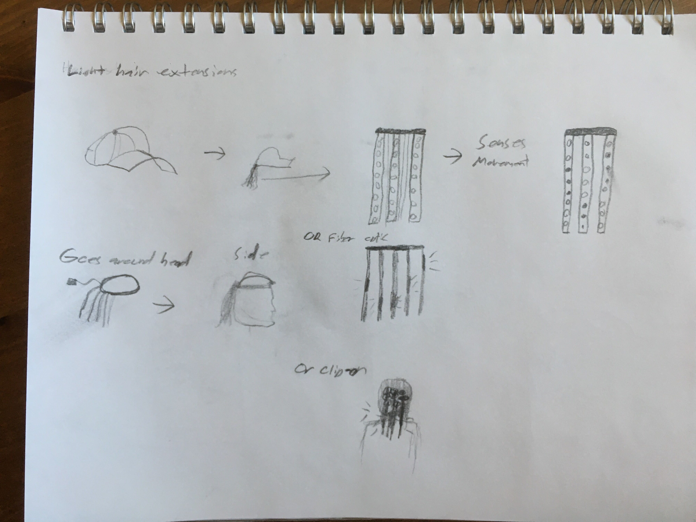

The number one problem I had to face when starting this project was not trying to solve a problem. So that's also where my sketches started. #1 is an addon to your jogging clothes. If running up close to someone a range finder will detect them and automatically beep the buzzer. #2, the least original idea in the entire class, having direction arrows on your back for when you're biking so you let other drivers know which way you're about to turn. I liked this one a lot actually (because it solves an actual problem). Then I had more of a tool than a fashion idea - to add a range finder on glasses with a little display so that your can effortlessly measure how far things are from you.
#4 were your standard Christmas socks with lights triggered through a vibration sensor on your heels so when you're walking your socks become a nice LED Christmas decoration. The #5 is very close to what our group decided to go with, a simple heartbeat sensor (in this case in a form of a bracelet) that transmits the heartbeat to a set of lights shaped like a heart. That way everybody can see how fast your heart's beating at the moment. For #6 I was thinking about a simple (and very durable) glove that let's you submerge your hand in hot water. The glove'd have a built in temperature meter and would relay how hot the temperature is through an LED (more like a color based on temperature range).
Another hit, #7, at least 3 other people had a similar idea... Using your headphone vibrations to add some lighting show to them. In my case it was a sleeve over the top of the headphones that lights up based on sound. #8 is an enhanced safety vest. Your standard vest, except that this time you get some light sensors that tell LEDs on the vest to light up when it's dark so that you're even more visible.
#9 ended being a weird LED beard. I was honestly mostly just joking but people actually liked the idea. In our refined sketches we were considering doing that in combination with LED hair extensions. However, we scrapped it, mostly because of a lot of difficulties this idea'd definitely bring (didn't have enough lights + how do you anchor it on the head + where do you hide the batteries). And lastly, #10, Iron Man's shirt (essentially the same idea as the heartbeat except that you don't need a sensor).
For the refined sketches like I mentioned above, the heartbeat and the hair/beard extension were the ones we decided to go with. Regarding the second one, I think I actually did quite a good job with a possible implementation - using a hair clamp to secure all the LED extensions on a person's head. Nonetheless, we still went with the other idea since this one'd require a lot of extra time and money (for the extra lights). So, our winner was the heart idea which we all felt we were probably gonna do since presenting our sketches. The direction we chose was very similar to my original heartbeat sketch the only difference being that we chose the wired route instead of a wireless one. Andie came up with that specific implementation and since we thought it struck a good balance between "coolness" and "doability" we set of in that direction.
Other's refined sketches had a few interesting spins on the two final ideas. Ahmad was thinking about a breathing t-shirt and instead of having just a heart the t-shirt would have lights all over it. Andie really liked the idea of optic fibres as those hair extensions but the price put us off. Bryan had a... spiral? instead of a heart. If we had had more light strands I'd have rooted for Zach's idea. He was thinking about having several light strands going out of the heart and the light patterns would then represent the heart beating which I thought was pretty cool.
     The final product ended up looking like the picture above. A simple box containing one StitchKit board with input being a little heartbeat sensor (we did our best to hide the cables under clothing) and output being a single strand of lights sown onto a t-shirt (with another t-shirt on top to hide the cables). Huge thanks goes to Andie for taking several hours to sow everything onto the t-shirt... The heart itself has three ranges: <70 bpm, 70<100 bpm and>100 bpm. The range determines the color of the heart (blue, purple and red respectively). We also implemented a nice pattern to make the whole effect a bit more interesting, watch the video and see for yourself...
My contributions were the idea and then a rudimentary code base for the heartbeat sensor to communicate with the lights which was achieved with the help of others. And then, as you can see, being the model for the whole thing :-D.